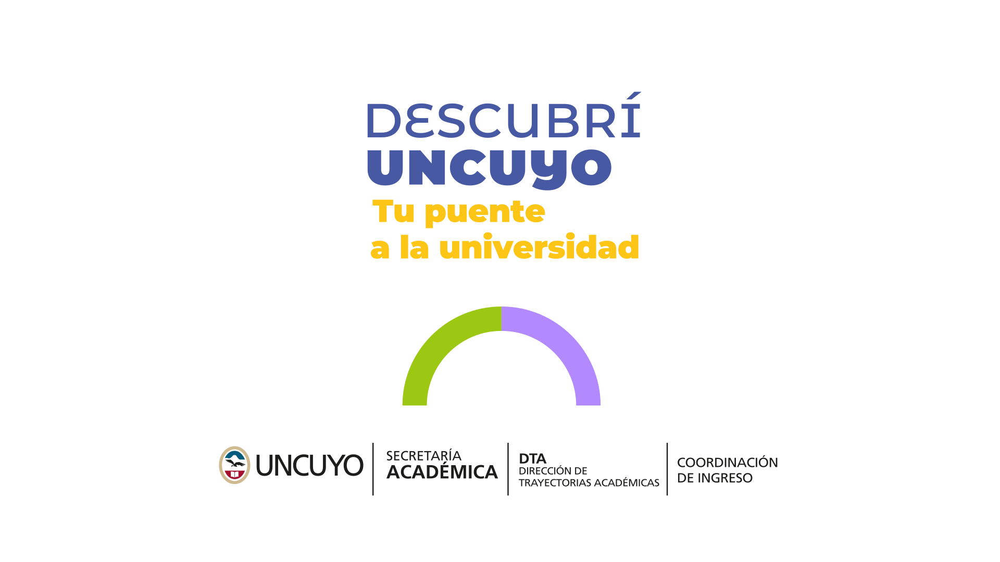
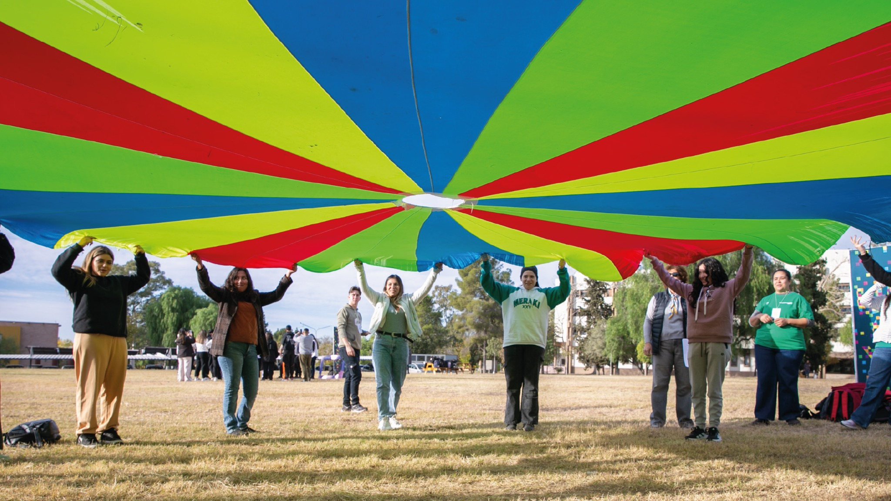
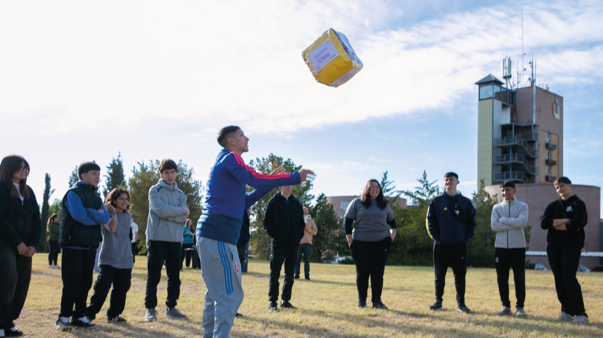
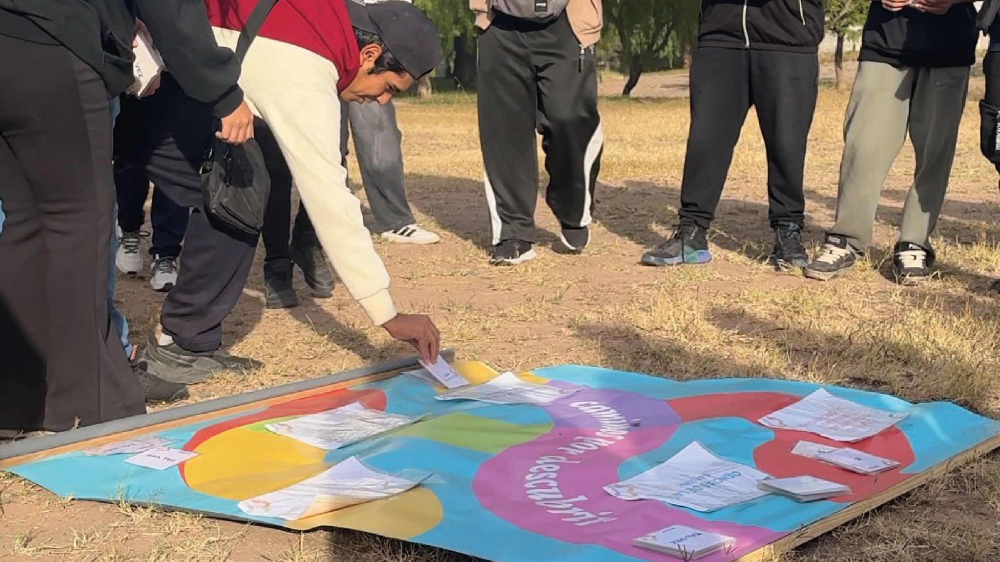
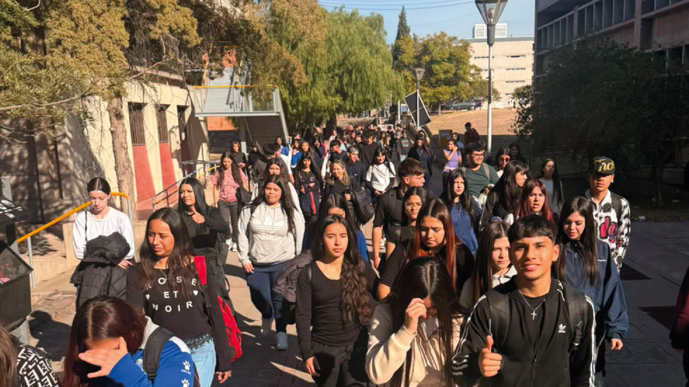
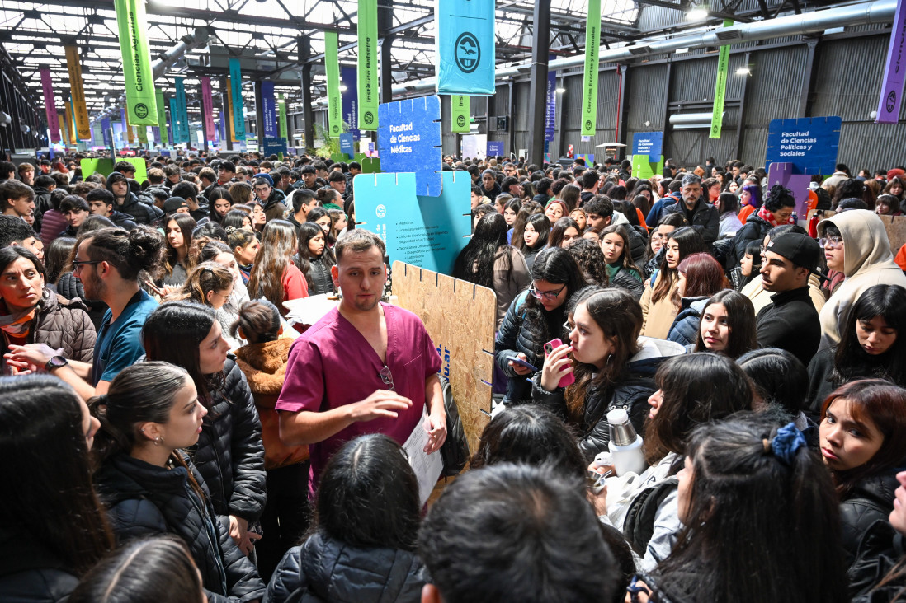
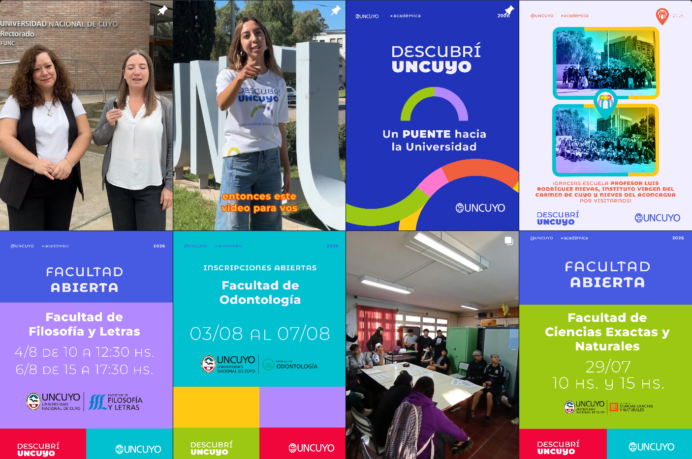

Requiere decisiones
Organización, articulación y recursos para sostener acciones de ingreso en toda la Universidad.
 Ingreso UNCUYO
Ingreso UNCUYO

PUNTO DE ENCUENTRO
llegaron al campus
Reconoce y pone en discusión ideas previas, prejuicios y representaciones sobre la Universidad.

Presenta la red de becas, salud, deportes, orientación y acompañamiento disponible para estudiantes.

Organiza la oferta académica para que cada estudiante pueda explorar intereses, familias y posibilidades.

Permite reconocer espacios, servicios y dinámicas universitarias mediante una experiencia situada.

INTERVENCIONES TERRITORIALES

Presentación integral de la Universidad y su oferta educativa.

Se visitaron 9 departamentos, para lo cual se recorrieron casi 1.300 km.
PÁGINA WEB
La web funciona como anclaje y conecta los distintos canales y recursos.
Recorrer el sitioREDES SOCIALES

AULA ABIERTA
Cursos gratuitos y autogestionados, disponibles en la plataforma Moodle, que acercan la Universidad a personas con diferentes intereses, trayectorias y realidades.
La Universidad se abre a diferentes trayectorias, intereses y realidades.
Explorar Aula AbiertaEmpezamos con una pregunta y terminamos con otra.